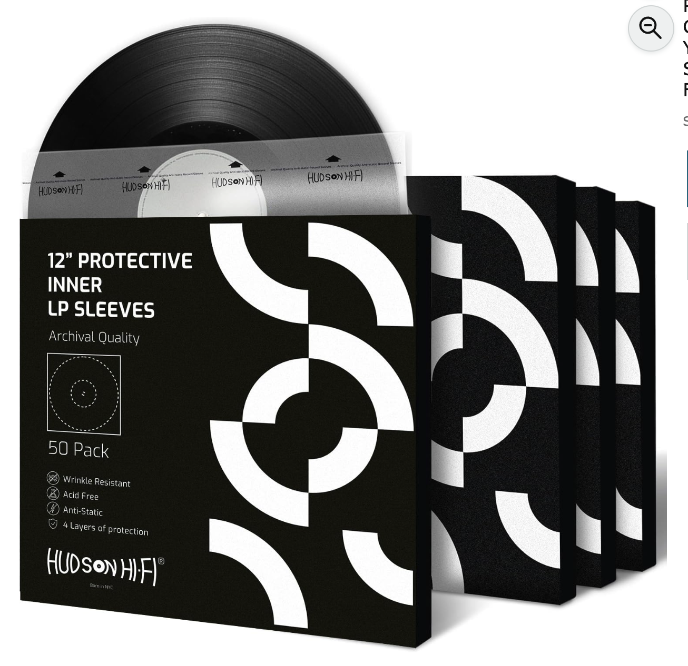
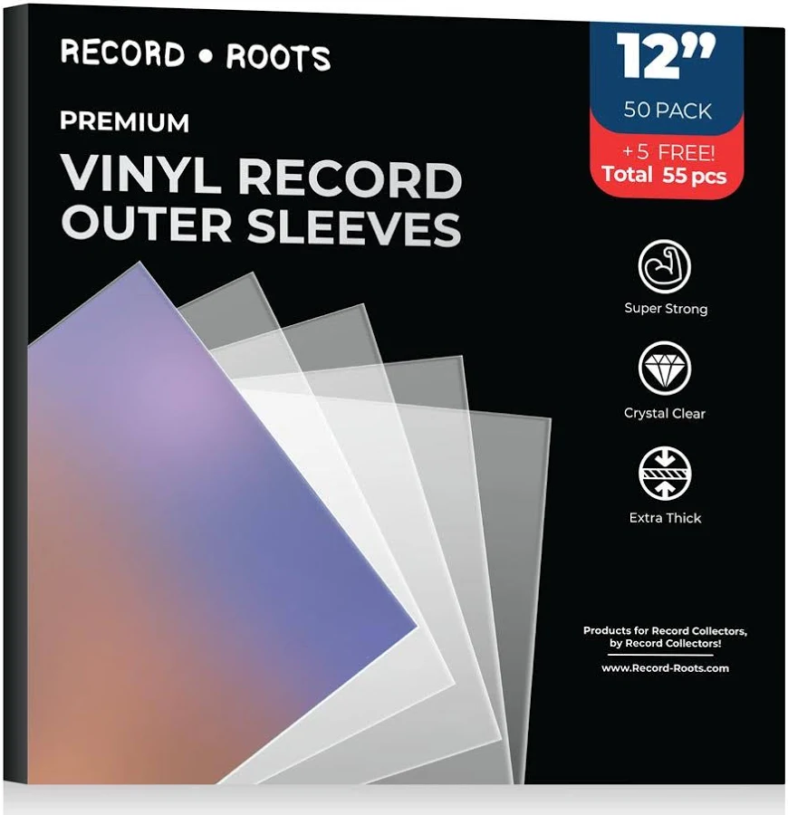

Proper storage is a hotly debated topic within various different record collecting communities. Some people prefer ease of access, some people prefer protection, and some people prefer something in between. Record storage isn't a clear-cut issue and has many factors to consider. I'll attach a list below to attempt to name as much as I can.
There is a lot to be said about different storage solutions and protectice measures, though in this basic guide I will only be covering what I personally utilize to protect my records.
There are a few basic things I do that everyone should do that I am simply going to gloss over really quick:
- Keep records out of direct sunlight to prevent warping
- Store records vertically to prevent warping
- Dont leave records on the turntable platter when done playing
- Any humidity is fine for the most part, just avoid constantly changing humidity
That covers the basics of what everyone needs to know. I will now dive deeper into the specifics of how I personally protect my records.
Sleeving really comes down to personal preference, but has seen an uptick in usage in recent years with the new boom in record collecting. There are two types of sleeves: inner sleeves and outer sleeves.

99.99% of record collectors will agree that replacing the paper inner sleeves that come with most records with antistatic plastic inner sleeves is a good practice. Paper sleeves can leaves debris in the grooves of the record, leave static within the record (which causing popping during playback), and are only used because they are cheap. I personally use Hudson Hi-Fi record inner sleeves. They do their job well and can be found in large quantities on Amazon for not that much money.
Outer sleeves on the other hand, are a much more hotly debated topic. Many people argue it adds a level of complication to playing records that diminishes the "feel" of the listening experience, and some people believe they just dont work. In my opinion, outer sleeves offer enough protection to justify their use. I personally sleeve all of my records in outer sleeves, except for box sets. I especially do this because I have a dusty room and this prevents dust from somehow getting inside of the records. I personally just buy whatever sleeves are cheapest and fit my needs at the time. The only thing to remember is: Do not buy PVC outer sleeves. Outer sleeves made out of PVC can experience "PVC off-gassing" which can stain record sleeves, not look good, and smell bad.